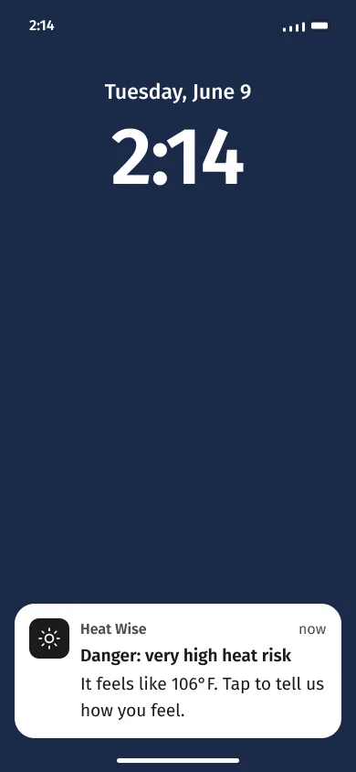
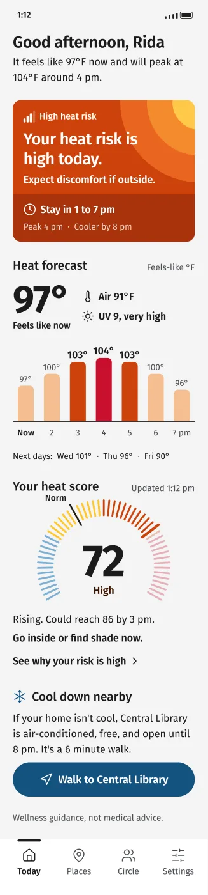
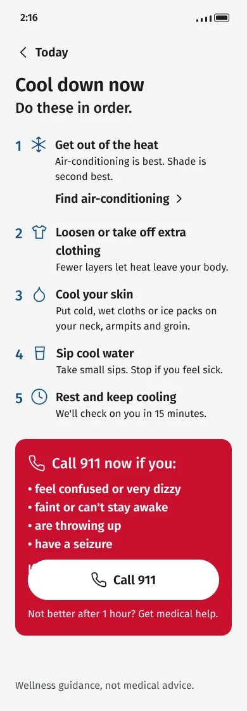
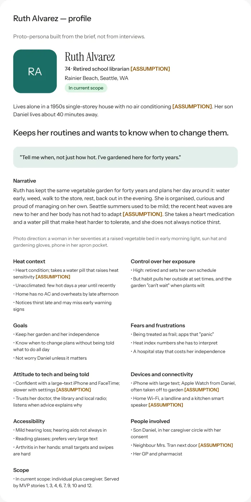
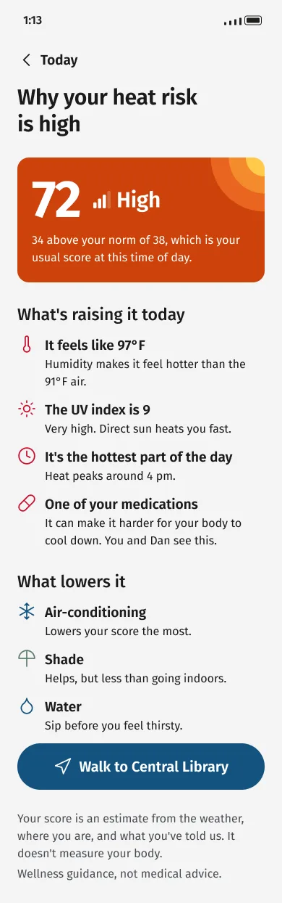
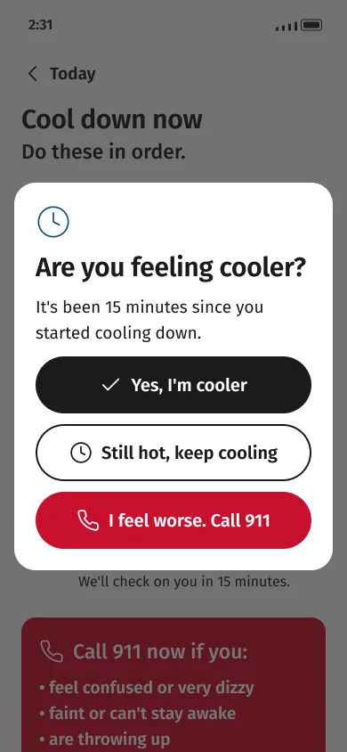
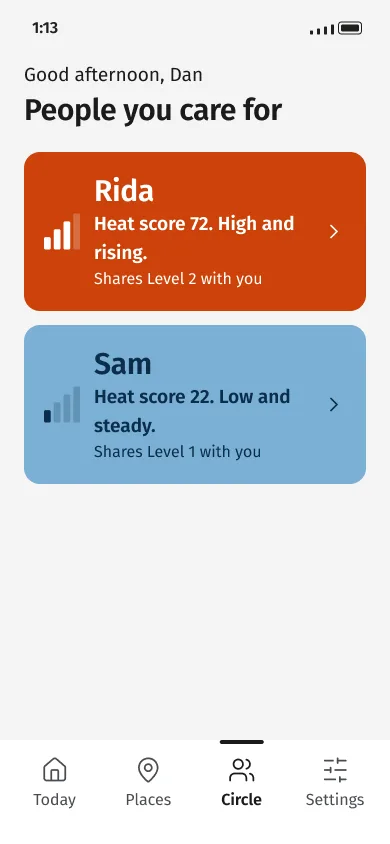
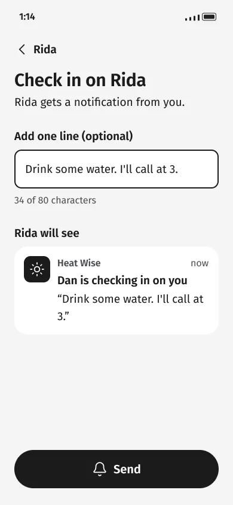

04 · The lake · Case study
HeatWise
Personal heat risk for people in cities that were never built for heat.
- Role
- Team lead & project manager
- Timeline
- Fall 2026 capstone, UNT
- Team
- 2 (with Gabi)
- Tools
- Figma, FigJam, Figma Make
In short
Heat waves are reaching U.S. cities that have little experience managing them. HeatWise is a mobile app for renters, older adults and people with health conditions. It explains what today's heat means for their body, shows where they can cool down right now, and helps them check on the people they care for.
Needs Ian outcome line once testing is done, e.g. "X of Y testers correctly identified their risk level and a nearby cooling spot."



The problem
Extreme heat kills more Americans than any other weather event Check this verify and cite before publishing, and it's increasingly hitting cities in the Pacific Northwest, the Midwest and the Northeast, where homes, habits and public systems were designed for cool summers. Northern U.S. regions are the least prepared for heat waves.
A forecast of "97°" doesn't tell a renter without reliable AC, someone on medication that affects heat tolerance, or an older adult living alone that today is dangerous for them. And people who don't think of themselves as "at risk" tend to ignore generic alerts.
Our questionHow might we help renters and heat-inexperienced residents understand their own heat risk, so that knowledge, not fear or guesswork, guides what they do on a dangerous day?
Research
- Secondary research on urban heat islands, heat-related illness, and heat measures such as the Universal Thermal Climate Index and "feels like" temperature
- A comparison of how cities handle heat, from U.S. cities to Singapore and European countries, ranked against a shared set of criteria
- Expert input from UNT faculty and subject librarians Check this confirm who you spoke with
- Personas, empathy maps and storyboards for renters, medically vulnerable people and caregivers
- 28 "How might we" questions grouped into individual immediate action, individual preparedness, community action, and heat knowledge

What I learned from the research
- Long-term fixes need policy. The most effective heat solutions, like tree canopy, cool roofs and cooling infrastructure, rely on city funding and government mandates.
- Risk is personal. Age, health conditions, medications and housing change what a given temperature means for each person.
- Social isolation amplifies heat risk. Research on heat-related deaths points to living alone as a major factor, and interventions rooted in social connection work.
- People act on timing, not temperature. Alerts help only if they arrive early enough, at the right time of day, with a clear next step.
Where it got hard
The solution
Your heat score. A daily score from Low to Danger, built from the forecast plus personal factors like health conditions and medications. Users can add a medication and get more specific guidance.

Why your risk is high. A plain-language breakdown of what's driving today's risk, and what to do about each factor.
Cool down now. Nearby cooling spots such as libraries and community centers, with hours, distance, and walking directions. After a visit, a simple "Are you feeling cooler?" check-in escalates to emergency help if someone isn't improving.

Your circle. Add the people you care for, see their heat risk at a glance, and send a check-in, so caregivers and family can look out for someone who lives alone.


Privacy is designed in: users choose what health information to share, and it shapes guidance without being exposed to their circle. Check this confirm this matches your opt-in design
Outcome
Needs Ian user testing results. Useful forms: task success for "find out if today is dangerous for you" and "find a cooling spot", a tester quote, changes you made because of testing.
Reflection
Needs Ian Ian's own words. Prompts: What did the scope pivot teach you about leading a team? What would you need to prove before a city or health system adopted HeatWise? Draft starter: The most important decision on HeatWise wasn't a screen. It was the moment we admitted our scope was too big and chose the version of the problem we could actually help with. That's the kind of call I want to keep making as a product owner.